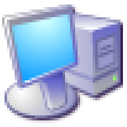

Thư viện kiến thức
chống lại brain root,
LEts GO!.
Những ghi chép đa phần là nhặt về ghi lại hehe về hạ tầng, đám mây, AI và lập trình — được sắp xếp để bạn luôn biết nên đọc gì tiếp theo.
Tìm theo tên bài, mô tả hoặc từ khóa.
Danh sách bài viết
Tất cả ghi chép
27 bài viết
01 · Hạ tầng
DevOps căn bản
Giới thiệu về Linux
Hệ điều hành Linux và những câu lệnh nền tảng cần biết.
- Linux
- Căn bản
Tổng quan về Docker
Hiểu container, image và cách Docker vận hành ứng dụng.
- Docker
- Container
Cloud Computing
Điện toán đám mây và những ứng dụng trong thực tế.
- Cloud
- Tổng quan
Networking
Các khái niệm mạng máy tính căn bản cần làm rõ.
- Network
- Nền tảng
Terraform
Làm quen Infrastructure as Code và các lệnh thường dùng.
- Terraform
- IaC
Nginx
Cơ chế hoạt động của web server và reverse proxy Nginx.
- Nginx
- Server
CI/CD Pipeline
Tự động hóa kiểm thử, đóng gói và triển khai phần mềm.
- CI/CD
- Automation
02 · Đám mây
AWS & dịch vụ Cloud
Tổng quan về AWS
Bức tranh tổng thể về nền tảng và các dịch vụ phổ biến.
- AWS
- Nhập môn
EC2 · Máy chủ ảo
Khởi tạo và quản lý máy chủ ảo đầu tiên trên AWS.
- EC2
- Compute
VPC · Mạng riêng ảo
Thiết kế mạng nội bộ và kiểm soát luồng truy cập.
- VPC
- Network
IAM · Quyền truy cập
Quản lý người dùng, nhóm và chính sách bảo mật.
- IAM
- Security
ECS · Chạy Container
Triển khai và quản lý ứng dụng Docker bằng ECS.
- ECS
- Container
ECR · Kho Docker Image
Lưu trữ và quản lý container image an toàn trên AWS.
- ECR
- Registry
S3 · Lưu trữ dữ liệu
Dịch vụ object storage linh hoạt, bền vững và bảo mật.
- S3
- Storage
RDS · Cơ sở dữ liệu
Triển khai MySQL, PostgreSQL và MariaDB được quản lý.
- RDS
- Database
CloudFront · CDN
Tăng tốc phân phối và bảo vệ nội dung trên toàn cầu.
- CloudFront
- CDN
03 · Trí tuệ nhân tạo
AI & Machine Learning
AI là gì?
Khái niệm, lịch sử và vai trò của trí tuệ nhân tạo.
- AI
- Nhập môn
Machine Learning
Cách máy tính học từ dữ liệu cùng các thuật toán phổ biến.
- ML
- Thuật toán
Deep Learning
Mạng nơ-ron sâu, CNN, RNN và những ứng dụng thực tế.
- Deep Learning
- Neural Network
AI trong lập trình
Gợi ý mã, phân tích lỗi và tự động hóa quy trình phát triển.
- AI Tools
- Coding

04 · Máy tính
Lập trình từ nền tảng
Máy tính hoạt động thế nào?
Phần cứng, phần mềm và cách các thành phần phối hợp.
- Computer
- Nền tảng
Ngôn ngữ lập trình
Tổng quan và cách chọn ngôn ngữ phù hợp với mục tiêu.
- Code
- Tổng quan
Khái niệm quan trọng
Biến, hàm, điều kiện và tư duy nền tảng khi viết code.
- Concept
- Căn bản
Python
Cú pháp, cấu trúc và những ứng dụng nổi bật của Python.
- Python
- Language
C và C++
Hai ngôn ngữ nền tảng và các khái niệm cốt lõi.
- C/C++
- System
Java & JavaScript
Phân biệt và tìm hiểu hai ngôn ngữ phổ biến này.
- Java
- JavaScript
05 · Nền tảng Web
Web & hiệu năng
Chưa tìm thấy ghi chép
Thử một từ khóa khác hoặc xem lại tất cả chủ đề.